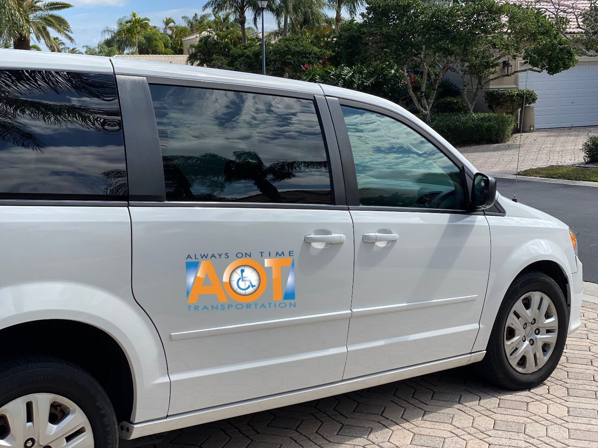
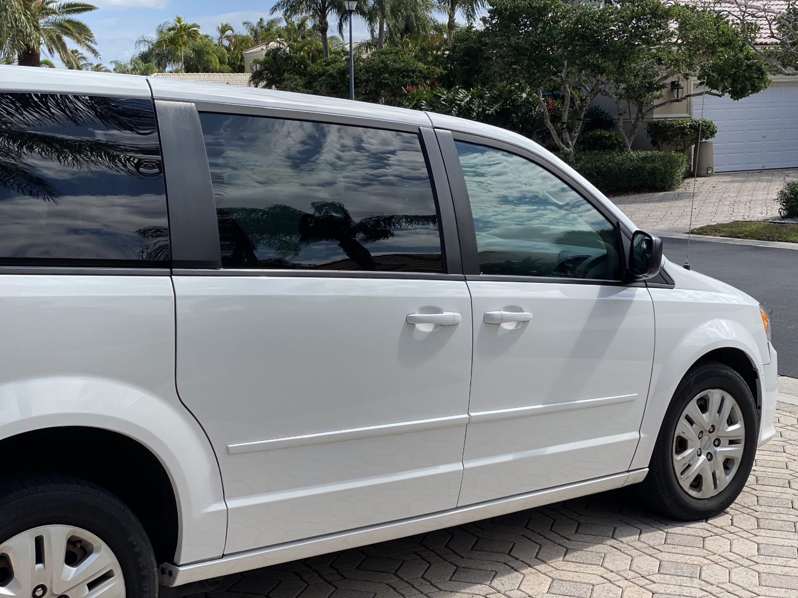
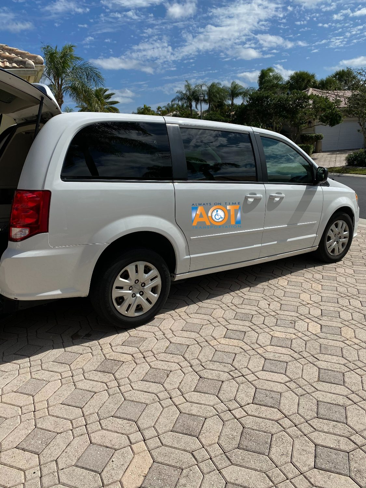
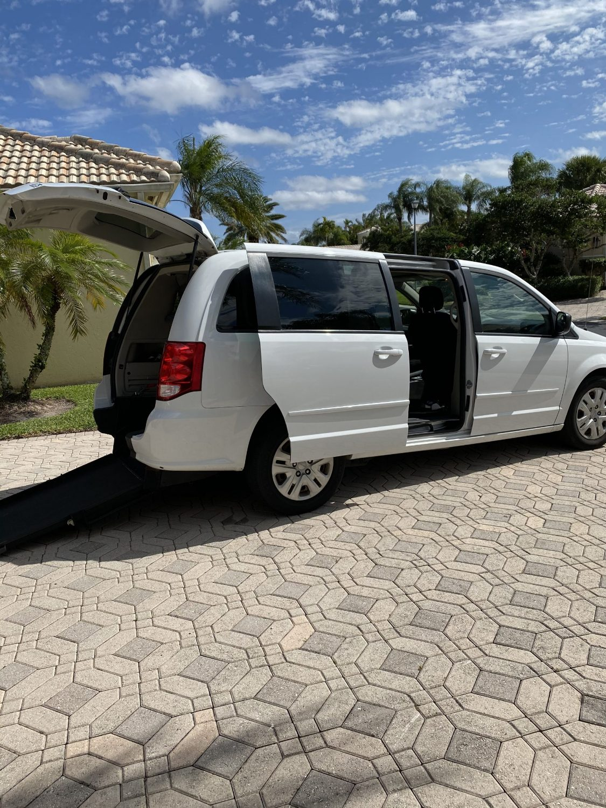

Home · Services
Services as unique as your needs
One fleet, many reasons to ride. Whatever the trip, we get you there safely, comfortably, and on time — with a driver who helps from door to door.
Non-emergency medical
Getting to care, right on schedule
The heart of what we do. Reliable rides to and from dialysis, doctor's appointments, physical therapy, outpatient procedures, and hospital admissions or discharges — for riders who don't need an ambulance, but do need dependable, accessible transportation.

Ambulatory & wheelchair
Comfortable rides for every level of mobility
Whether your loved one walks with a cane, uses a walker, or travels by wheelchair, we meet them where they are. Our drivers assist from the front door, secure wheelchairs properly, and make sure everyone is settled before we roll.
Airport & cruise
Start the trip relaxed
Curb-to-curb concierge service to and from PBI, FLL, and MIA, plus Port Everglades and the Port of Palm Beach for cruise departures. We handle the luggage and the timing so travel day is easy from the very first mile.


Private & events
For the moments that matter
Weddings, family gatherings, hotels, and special occasions — accessible transportation so no one has to sit out the celebration. Arrive together, on time, and cared for from door to door.
Newest service
Stretcher transport, done with dignity
For riders who can't sit upright, we now offer safe, non-emergency stretcher transportation. It's the accessibility of an ambulette — without the institutional feel or the price — ideal for facility transfers, hospital discharges, and getting home in comfort.

Not sure which service you need?
Tell us where you're headed and who we're caring for — we'll recommend the right ride and take care of the rest.